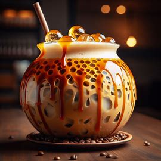

Italok
A Szerencse Itala
Állás interjúra esetleg vizsgára tartasz? Vagy tán ma van az első napod a suliban vagy a munkahelyen? Első randi előtt állsz? Akárhogyis, a Napsugár Kávéház híres Szerencse Itala biztosan a segítségedre lesz. Ezt a mézes tejeskávét aranyszínű üvegpohárban, nagy adag tejszínhabbal a tetején tálaljuk, a habot szerencsét hozó tündérporral szórjuk meg az extra löketért.
Karamell Özön
Azt már mindannyian tudjuk, hogy a karamellának nem lehet ellenállni. Ebben a jeges, karamellás kávé álomban minden megvan, ami egy tökéletes hűsítő kávéitalkoz szükséges. A tejeskávét körben karamellel lecsöpögtetett gömbalakú pohárban tálaljuk rengeteg jéggel. Az ital tetejére szintén gömb alakú, lehellet vékony karamell gömböket helyezünk díszítés gyanánt.
Klasszikus kekszes latte

A klasszikus latte italt senkinek sem kell bemutatnunk, mi mégis megtesszük, hiszen nálunk még a klasszikusok is meg vannak bolondítva egy kicsikét. A meleg kávé és habosított tej keverékét igazi lattes pohárban tálaljuk, tejszínhabbal édesítjük, és házi kekszmorzsát szórunk a tetejére egy igazán izgalmas kávéélményt kreálva ezzel.
Sütemények
Szerencse Süti
A Napsugár szerencsesütije sokban hasonlít a klasszikus szerencsesütire. Mi viszont a sütemény tésztáját nem egy, hanem két helyen csípjük össze, ezzel ikonikus lóhere alakot formálva, és zöld ételfestékkel (valamint természetesen némi tündérporral) tesszük igazi szerencsehozó süteménnyé.
Epres kardinális
A vékonyra nyújtott mézes tészta magasra kel sütés közben, ezzel egy levegős alapot kapva. A tésztában keletkezett lyukakat tejszínhabbal, és eperdzsemmel töltjük ki, ezáltal egy igazán krémes, gyümölcsös és természetesen mézes süteménycsodát létrehozva.